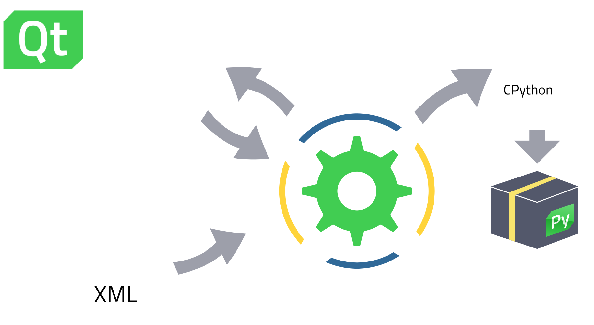

Hybrid Qt Development: boosting your projects with Python
Dr. Cristián Maureira-Fredes
@cmaureir


PSA
You can find the slides in qtinfo.dev/qtforpython_qtdevcon22
Python and Qt
are roughly the same age


Besides their maturity,
both stand out for one common goal:
simplicity
Is Python simpler than C++?
def add(a: int, b: int) -> int:
return a + b
add(30, 12)
# 42
# n -> int
if n&~-n<1:
# ???
_="_=%r;print(_%%_)";print(_%_)
Python popularity (1/3)
- From a QtWS2018 talk
- 7th Most Popular
- 3rd Most Loved
- 1st Most Wanted
- 4th Tiobe Index
- From a 2019 QtWebinar
- 4th Most Popular üìà
- 2nd Most Loved üìà
- 1st Most Wanted
- 3rd Tiobe Index üìà
Python popularity (2/3)
- 3rd Most Popular üìà
- 6th Most Loved üìâ
- 1st Most Wanted üéâ
- 1st Tiobe Index üéâ
One can argue, those numbers are not really representative.
But we cannot neglect the impact on fields like Data Science, and AI, and the many conferences and organizations.
Python popularity (3/3)
The 2022 update?
But what's the relation with C++?
Many of the most popular Python modules, rely on compiled languages, like Fortran, C, or C++.


What you might know
The official set of Python bindings for the Qt framework.
...but not only that ü§î.
Things that /maybe/ you didn't know üòÆ
Bridge to other Python modules (1/2)
Bridge to other Python modules (2/2)
"Pythonizing" Qt üêç
# Common Qt structure
# - Using setter/getter
# - No writable properties
table = QTableWidget()
table.setColumnCount(2)
button = QPushButton("Add")
button.setEnabled(False)
layout = QVBoxLayout()
layout.addWidget(table)
layout.addWidget(button)
layout.setSpacing(2)
from __feature__ import (
snake_case
)
table = QTableWidget()
table.set_column_count(2)
button = QPushButton("Add")
button.set_enabled(False)
layout = QVBoxLayout()
layout.add_widget(table)
layout.add_widget(button)
layout.set_spacing(2)
from __feature__ import (
snake_case, true_property
)
table = QTableWidget()
table.column_count = 2
button = QPushButton("Add")
button.enabled = False
layout = QVBoxLayout()
layout.add_widget(table)
layout.add_widget(button)
layout.spacing = 2
Opaque Containers üöÄ (1/2)
- Python Containers need to have a C++ counterpart
- Using signatures with C++ containers, requires copying üò®
- Implementation Details:
- Wraps the underlying C++ object directly
- Sequence Protocol
- Add/Remove items directly
Opaque Containers üöÄ (2/2)
QPointListvslist(QList)vsdeque(QList)- 1 million elements
- Adding and Poping
Extreme case, but not impossible üòÖ
# Appending
Opaque QPointList 0.55s
Python list 0.79s
Python deque 0.84s
- 51% faster (list)
# Pop the first element
Opaque QPointList 0.07s
Python list 69.28s
- 96831% faster
# Pop the first element
Opaque QPointList 0.07s
Python deque 0.29s
- 298%
Project distribution and packaging üì¶
Compatible with many freezers and compilers
| Name | License | Qt 6 | Qt 5 | Linux | macOS | Windows |
|---|---|---|---|---|---|---|
| fbs | GPL | partial | ✅ | ✅ | ✅ | ✅ |
| PyInstaller | GPL | partial | ✅ | ✅ | ✅ | ✅ |
| cx_Freeze | MIT | ✅ | ✅ | ✅ | ✅ | ✅ |
| py2exe | MIT | partial | partial | ❌ | ❌ | ✅ |
| py2app | MIT | ✅ | ✅ | ❌ | ✅ | ❌ |
| briefcase | BSD3 | ✅ | ✅ | ✅ | ✅ | ✅ |
| Nuitka | MIT | ✅ | ✅ | ✅ | ✅ | ✅ |
Does everyone likes vanilla? üç®
Not only vanilla Python üç®
- Python implementation (in Python)
- Has a JIT
- On average 4.2 faster than CPython
The mandelbrot example
bugreports.qt.io/browse/PYSIDE-535
# Python
1/8, max ite: 96, time: 4.111s
2/8, max ite: 288, time: 7.179s
3/8, max ite: 1056, time: 22.156s
4/8, max ite: 4128, time: 82.706s
5/8, max ite: 16416, time: 371.348s
# PyPy
1/8, max ite: 96, time: 4.732s
2/8, max ite: 288, time: 4.99s
3/8, max ite: 1056, time: 6.872s
4/8, max ite: 4128, time: 12.451s
5/8, max ite: 16416, time: 33.341s
...don't forget about Shiboken
Binding generation process
Binding generation process
Binding generation process
Binding generation process
Binding generation process
Exposing C++ code to Python
Custom Python Bindings (1/2)
- Library files:
CMakeLists.txttest.cpptest.h
- Shiboken files:
bindings.h (right top)bindings.xml (right bottom)
#include "test.hpp"
<typesystem package="simple">
<function signature="hello()"/>
</typesystem>
- Library files:
CMakeLists.txttest.cpptest.h- Shiboken files:
bindings.h(right top)bindings.xml(right bottom)
#include "test.hpp"Custom Python Bindings (2/2)
Custom Python Bindings (with Qt)
Simple typesystem
<typesystem package="wiggly">
<load-typesystem name="typesystem_widgets.xml"
generate="no"/>
<object-type name="WigglyWidget"/>
</typesystem>
Python usage
from wiggly import WigglyWidget as WigglyWidgetCPP
from wigglywidget import WigglyWidget as WigglyWidgetPY
# ...
widget_py = WigglyWidgetPY(self)
widget_cpp = WigglyWidgetCPP(self)
# ...
layout.addWidget(widget_py)
layout.addWidget(widget_cpp)
- Top: Widget written in Python
- Bottom: Widget written in C++ (exposed to Python)
Simple typesystem
Python usage
from wiggly import WigglyWidget as WigglyWidgetCPP
from wigglywidget import WigglyWidget as WigglyWidgetPY
# ...
widget_py = WigglyWidgetPY(self)
widget_cpp = WigglyWidgetCPP(self)
# ...
layout.addWidget(widget_py)
layout.addWidget(widget_cpp)
- Top: Widget written in Python
- Bottom: Widget written in C++ (exposed to Python)
Extending C++ applications with Python üí´
Shiboken Wizard üßô
Overview
And many other features ⚙️
- Reduce generated wrapper code
- Automatic container conversions and primitive types
- Free functions (variadic functions and flexible arg checking)
QtScrypt (1/2)
- Inspired by QtScript, not a port
- A dynamic way to interact with Python from C++
- Enabling Python modules within C++ üêç
- proof of concept
// Simple Engine
QScryptEngine e;
e.execute(...);
QVariant r = e.evaluate(...);
// Load Python module
QScryptModule mod(...);
// Get Function Reference
QScryptFunction f(..., &mod;);
// Call Function
QVariantList args;
QVariant r = f.call(args);
QtScrypt (2/2)
// [0, 1, 8, 27, 64, 125, 216, 343, 512, 729]
e.execute("print([i**3 for i in range(10)])");
// QVariant(QString, "Hello This Is A Test")
qDebug() << e.evaluate("f'hello this is a test'.title()");
//QVariant(double, 4950)
qDebug() << e.evaluate("sum(i for i in range(100))")
QScryptModule mod("super"); // super.py
QScryptFunction f1("add_three_numbers", &mod);
QVariantList args1;
args1 << 5 << 6 << 9;
// QVariant(double, 20)
qDebug() << f1.call(args1);
Future
- Improve compatibility in the Python ecosystem
- Improve cross compilation ⚙️
- PoC on mobile üì±
- Continue with the WebAssembly efforts üöÄ
- ...and probably your own requests!
Resources
- Product landing page qt.io/qt-for-python
- Wiki page pyside.org
- Official docs doc.qt.io/qtforpython
Communication channels
- Telegram https://t.me/qtforpython
- IRC/Matrix #qt-pyside on Libera.chat
- Mailing list lists.qt-project.org/mailman/listinfo/pyside
More platforms at wiki.qt.io/Qt_for_Python#Community
Hybrid Qt Development: boosting your projects with Python
Dr. Cristián Maureira-Fredes
@cmaureir